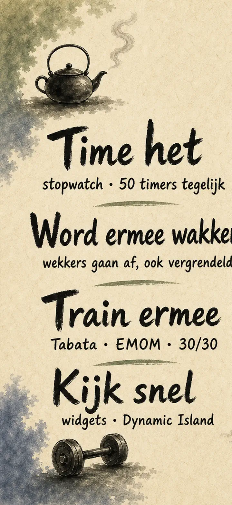
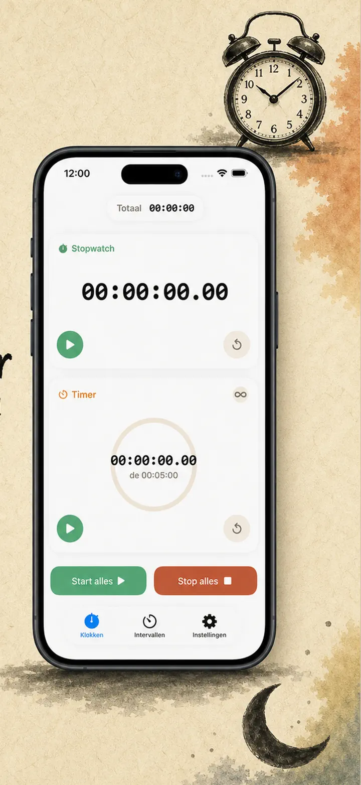
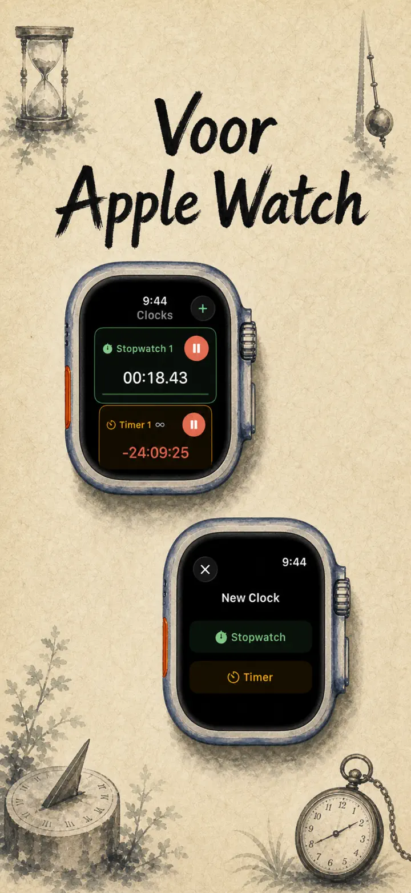
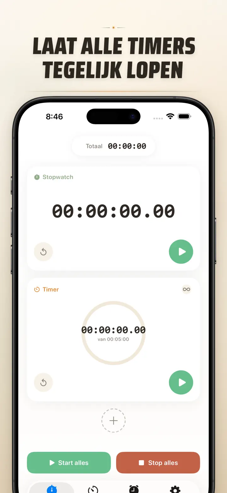
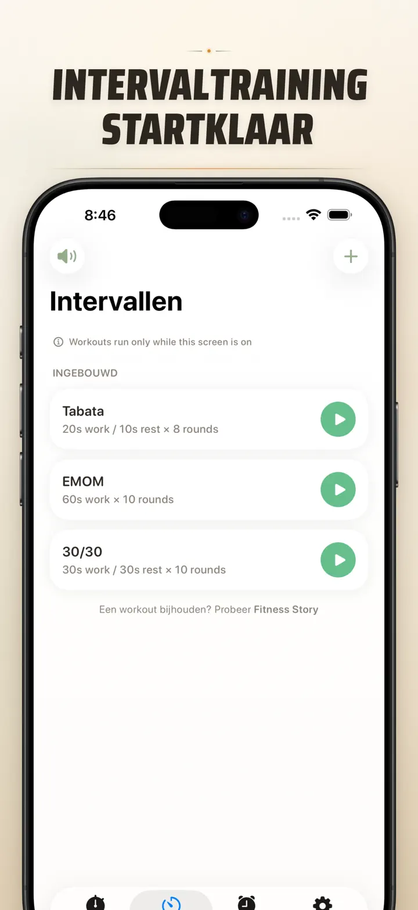
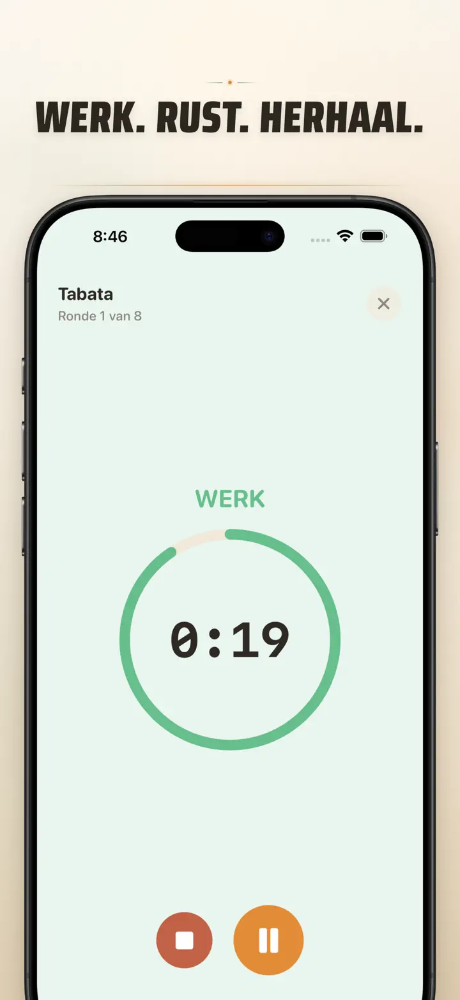
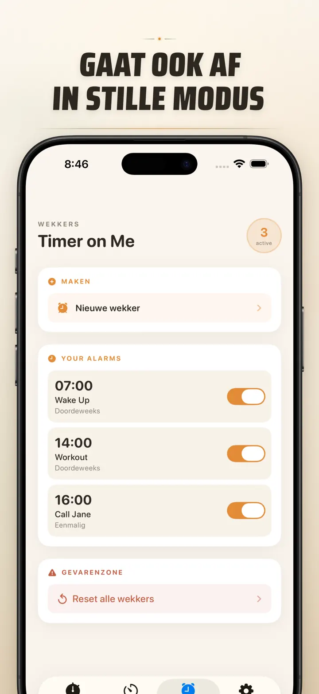

Timer on Me
Timer, Wekker, HIIT, Pomodoro
Nu met datumwekker: stel een eenmalige wekker in voor elke toekomstige datum & tijd, naast terugkerende wekkers, 50 timers tegelijk, HIIT & Tabata en Apple Watch.
Download in de App Store
Over de app
Timer on Me is jouw multi-timer en stopwatch voor iPhone, iPad en Apple Watch. Tot 50 onafhankelijke timers tegelijk, precieze intervaltrainingen en alarmen die écht afgaan — zelfs met een vergrendelde iPhone of gesloten app.
WEKKERS
- Wek- en herinneringsalarmen met eigen labels en weekdagschema's
- Aangedreven door AlarmKit — gaat af, ook met vergrendelde iPhone of gesloten Timer on Me
- Instelbare snooze (3 / 5 / 9 / 15 / 30 minuten) of geen snooze
- Kies uit ingebouwde tonen of importeer je eigen geluiden
- Eén tik in- en uitschakelen vanuit het speciale Wekker-tabblad
TRAINING EN INTERVALLEN
- Kant-en-klare Tabata, EMOM en 30/30 presets — twee tikken en je gaat
- Eigen intervaleditor: werk, rust en rondes in minuten en seconden
- Full-screen trainingsmodus met kleurwissel per fase en stille optie
- Pauzeren, overslaan en hervatten midden in de sessie zonder voortgang te verliezen
APPLE WATCH
- Echte native watchOS-app, geen simpele spiegeling van je telefoon
- Meerdere stopwatches en timers tegelijk op je pols
- Stopwatch nauwkeurig tot op honderdsten van een seconde
- Eigen wijzerplaat-complicaties voor één-tik-start
- Werkt zelfstandig, ook zonder iPhone in de buurt
50 TIMERS TEGELIJK
- Tot 50 onafhankelijke timers en stopwatches in één sessie
- Start, stop en reset per stuk of in groepen
- Auto-herhaal voor cyclische rondes
- Timers blijven doortellen voorbij nul om extra tijd vast te leggen
- Gekleurde voortgangsbalken: geel bij 50%, rood bij 10%
- Sleep om te sorteren, geef ze je eigen naam
BETROUWBARE MELDINGEN
- AlarmKit: alarmen gaan af, ook als je iPhone vergrendeld of de app dicht is
- Dynamic Island en Live Activity — voortgang in één oogopslag
- Widgets voor je beginscherm: klein, medium, groot
- Ingebouwde tonen: bellen, vogelzang, vintage telefoons
- Tik om te beluisteren voor je kiest
- "Houd scherm aan"-modus voor lange sessies
AANPASSEN EN DELEN
- Decimalen, totalen en percentages aan of uit
- Bewaar en overschrijf presets, haal ze met één tik terug
- Exporteer als CSV, JSON of platte tekst
- Deel met collega's, leerlingen of je coach
VOOR iPhone, iPad EN APPLE WATCH
- Lay-out past zich aan elk scherm aan
- Split View op iPad
- 34 talen
IDEAAL VOOR
- HIIT, Tabata, CrossFit en circuittraining
- Rondes boksen, kickboksen en vechtsport
- Pomodoro, tentamens en studeren
- Koffiezetten, eieren koken, stamppot, oven en keukentijden
- Yoga, pilates, meditatie en ademhalingsoefeningen
- Presentatie-oefeningen en instrumentenlessen
- Lessen, workshops en groepsactiviteiten
- Bordspellen en avonden met vrienden
Download Timer on Me en pak elke minuut bij de kop — in de sportschool, op werk of thuis.
Privacybeleid: https://masawata.net/privacy-policy.html Servicevoorwaarden: https://www.apple.com/legal/internet-services/itunes/dev/stdeula/
Schermafbeeldingen






Timer on Me
Nu met datumwekker: stel een eenmalige wekker in voor elke toekomstige datum & tijd, naast terugkerende wekkers, 50 timers tegelijk, HIIT & Tabata en Apple Watch.
Download in de App Store